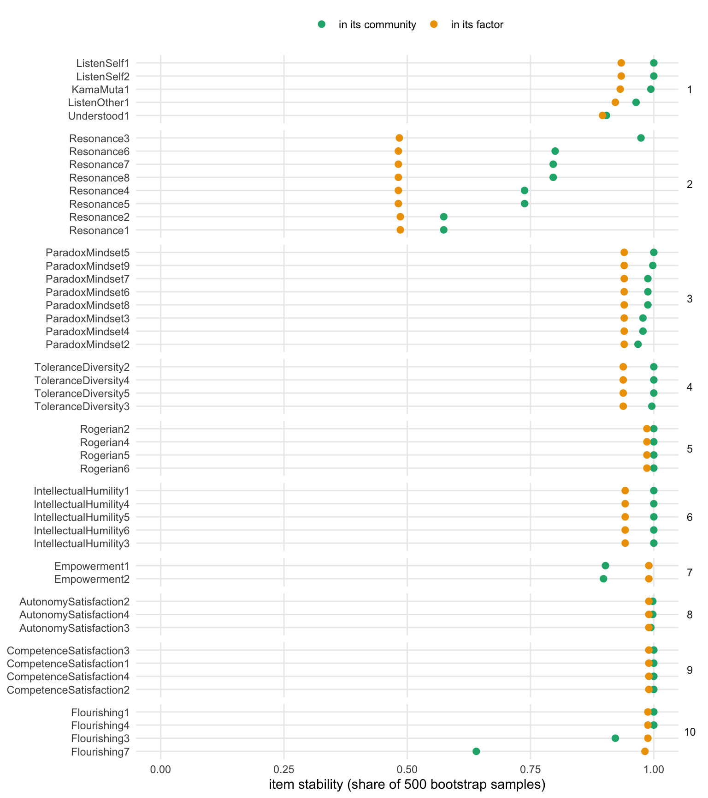
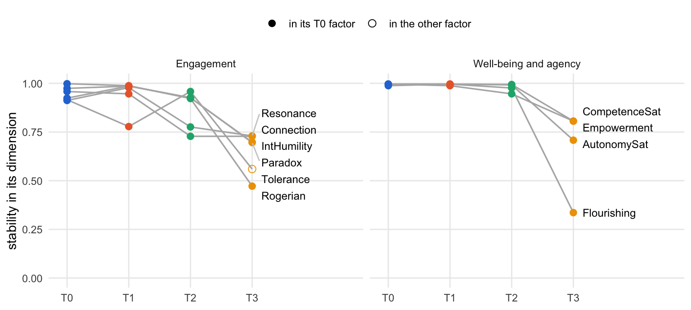
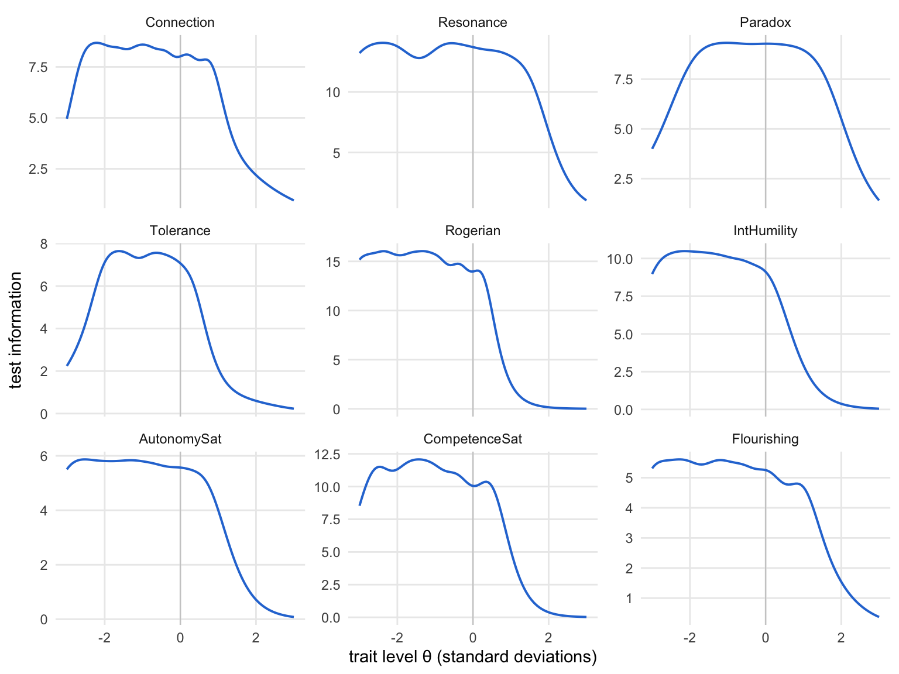

source("R/packages.R") # all packages (Chapter 1)
source("R/settings.R") # waves, conditions, folders (Chapter 1)
df <- readRDS("cache/df.rds") # one row per questionnaire (Chapter 2)
df_wide <- readRDS("cache/df_wide.rds") # one row per person (Chapter 2)
item_names <- names(select(df, ListenOther1:CompetenceNonFrustrated4))
source("R/scales.R") # the 23 scales (Chapter 2)
source("R/structure_ega.R") # network analyses (Chapter 16)
source("R/structure_irt.R") # GRM and UVA (Chapter 17)
final_pool <- readRDS("cache/structure_irt.rds")$final_pool # (Chapter 17)18. Final structure
NoteAbout this chapter
The structure of the final item pool, in seven analyses that follow one another: the hierarchical structure of the items at each wave and its bootstrap, the composite score of each community, how the composites group into factors at T0 and at each wave, the information of every item, and the reliability of every composite. Each analysis goes through the same six steps, from what it starts with to where its result goes next; a table at the end puts the composites side by side. Feeds the final structure and the master table of the psychometric supplement; the composites and their two factors are the scores of the post hoc analyses of the training effects (Chapter 19).
18.1 How each analysis is examined
Which analyses? Seven, in the order of the pipeline. The first two repeat the network analyses of Chapter 16 on the final pool of Chapter 17: the hierarchical structure of the items at each wave, and its bootstrap at T0. The next three turn the communities into composite scores and ask how these group into factors, at T0 and at each wave. The last two describe the items and composites by item response models: the information of every item, and the reliability of every composite.
What happens in each analysis? The same six steps, in the same order and in three parts: the analysis, its result, and what follows. The diagram shows the path; the list below describes each step.
flowchart TB
subgraph P0["the analysis"]
direction LR
S1["<b>Step 1</b><br>the starting point"]
S1 --> S2["<b>Step 2</b><br>the method and<br>the criterion"]
S2 --> S3["<b>Step 3</b><br>the estimation"]
end
subgraph P1["the result"]
direction LR
S4{{"<b>Step 4</b><br>the result"}}
S4 --> S5["<b>Step 5</b><br>where it strains"]
end
V["<b>Step 6</b><br>what follows"]
P0 --> P1
P1 --> V
classDef all fill:#efeff2,stroke:#8a8a8a,color:#1d1d1f
classDef verdict fill:#ffffff,stroke:#1d1d1f,color:#1d1d1f
class S1,S2,S3,S4,S5 all
class V verdict
style P0 fill:#fafafa,stroke:#8a8a8a
style P1 fill:#fafafa,stroke:#8a8a8a
The six steps in detail:
The analysis:
- The starting point. Which items or composites enter, from which questionnaires.
- The method and the criterion. How the analysis works, with its settings, and by which criterion it judges its result. As in Chapter 16: an item’s stability is the share of 500 bootstrap samples in which it lands in its community or its factor; a community or a factor is structurally consistent when it reappears with exactly the same items in at least 75 % of the samples; two partitions of the same items are compared by the share of item pairs they treat alike (the Rand index, 1 when they are the same); TEFI compares solutions on the same items, lower is better. A graded response model (GRM) needs at least three items, as in Chapter 17. The decisions taken in a step, such as the names of the composites and factors, are stated here with their reason.
- The estimation. The code. The bootstraps take a few minutes each and run in the pipeline script of Chapters 16 to 18; this chapter reads their results. The hierarchical solutions at each wave, the composite scores and the item response models are estimated here.
The result:
- The result. What the analysis finds, with a figure where it shows something.
- Where it strains. Where the result is weakest: the waves, items or composites on which it rests least firmly.
What follows:
- What follows. Where the result goes next.
18.2 Data and tools
Which data? The final pool of Chapter 17 (loaded above), the questionnaires of T0 and of all four waves, one data set each:
items_T0 <- df |> filter(Occasion == "T0")
list_df <- split(df, df$Occasion)Which results of the pipeline script? The bootstrap of the hierarchical solution of the final pool, and the bootstraps of the composites at each wave:
final <- readRDS("cache/structure_final.rds")The script stores the T0 solution of the final pool (assignment), the stability of every item at both levels of its bootstrap (final_items), the structural consistency of the communities (final_lower) and of the factors (final_higher), and for each wave the bootstrap of the composites (composite_boot).
Which tools? What runs in this chapter is written out below. The pipeline script, the functions it calls, and three small functions for the figures are shown once here:
# Post hoc psychometrics: the bootstraps and the chain of item selections
# of Chapters 16 to 18. The T0 questionnaires calibrate every step; the
# composites are bootstrapped again at each wave.
# Run from swt-website/ after Chapter 2: Rscript scripts/structure_pipeline.R
source("R/packages.R")
source("R/settings.R")
df <- readRDS("cache/df.rds") # one row per questionnaire (Chapter 2)
item_names <- names(select(df, ListenOther1:CompetenceNonFrustrated4))
source("R/structure_pool.R") # item pruning (Chapter 15)
source("R/structure_ega.R") # network analyses (Chapter 16)
source("R/structure_irt.R") # redundancy and IRT (Chapter 17)
source("R/structure_composites.R") # composites (Chapter 18)
# Chapter 16: bootstrap until every item is stable, then bootstrap the
# hierarchical solution of the stable items. The items are ordered by
# community and stability; louvain and the bootstrap draws depend on the
# order of the items.
pool <- structure_pool(df)
converged <- converge_ega(items_at(df, "T0", pool))
stable <- converged$stability |>
arrange(community, desc(stability)) |>
pull(item)
boot_hier <- boot_hier_ega(items_at(df, "T0", stable))
saveRDS(list(pool = pool,
passes = converged$passes,
stability = converged$stability,
stable = stable,
hier_items = hier_item_stability(boot_hier),
hier_lower = structural_consistency(boot_hier, "lower_order"),
hier_higher = structural_consistency(boot_hier, "higher_order")),
"cache/structure_ega.rds")
# Chapter 17: GRM per community and UVA on the persons who answered all
# stable items; the communities come from the bootstrap above
communities <- hier_item_stability(boot_hier) |>
select(item, community = lower, stability = stability_lower)
calibration <- items_at(df, "T0", communities$item) |> drop_na()
pruned <- community_discrimination(calibration, communities) |>
prune_items(redundant_sets(calibration))
final_pool <- pruned |> filter(keep) |> pull(item)
saveRDS(list(pruned = pruned, final_pool = final_pool),
"cache/structure_irt.rds")
# Chapter 18: the hierarchical solution of the final pool and its
# bootstrap; the composites of its communities, bootstrapped at each wave
final_T0 <- items_at(df, "T0", final_pool)
assignment <- hier_ega(final_T0, hier_seeds[["T0"]]) |>
hier_assignment() |>
arrange(higher, lower, item)
boot_final <- boot_hier_ega(final_T0)
composites <- composite_items(assignment)
boot_wave <- \(wave) boot_ega(composite_scores(df, composites, wave))
composite_boot <- tibble(wave = names(hier_seeds)) |>
mutate(boot = map(wave, boot_wave),
n = map_int(boot, \(b) b$EGA$n),
dimensions = map_int(boot, \(b) b$EGA$n.dim),
stability = map(boot, item_stability),
consistency = map(boot, structural_consistency),
frequency = map(boot, \(b) as_tibble(b$frequency))) |>
select(-boot)
saveRDS(list(assignment = assignment,
final_items = hier_item_stability(boot_final),
final_lower = structural_consistency(boot_final,
"lower_order"),
final_higher = structural_consistency(boot_final,
"higher_order"),
composite_boot = composite_boot),
"cache/structure_final.rds")# Exploratory graph analysis (Chapters 16 and 18). The network of the items
# comes from the graphical lasso on pairwise correlations ("auto": Pearson
# for items with eleven answer categories); walktrap finds its communities,
# louvain the two levels of the hierarchical solution. Bootstraps draw 500
# samples from a normal distribution with the observed correlations, with
# seed 42; each hierarchical solution has a seed of its own per wave.
# Louvain draws random numbers (also when EGA checks a sample for a single
# dimension), which parallel workers do not seed: the bootstraps run in one
# process (ncores = 1), so that they repeat exactly.
# the label of an item's scale (needs `scales`, Chapter 2)
scale_label <- \(item) {
scales$label[match(str_remove(item, "[0-9]+$"), scales$scale)]
}
# the answers of one wave to some items
items_at <- \(data, wave, items) {
data |>
filter(Occasion == wave) |>
select(all_of(items))
}
# a bootstrap of the network and its communities
boot_ega <- \(items) {
set.seed(42)
bootEGA(items, iter = 500, type = "parametric", corr = "auto",
model = "glasso", algorithm = "walktrap", na.data = "pairwise",
seed = 42, ncores = 1, verbose = FALSE, plot.itemStability = FALSE)
}
# how often each item falls into its own community across the bootstrap
# samples; community = the community in the observed data
item_stability <- \(boot, level = NULL) {
s <- itemStability(boot, IS.plot = FALSE)
if (!is.null(level)) s <- s[[level]]
stability <- s$item.stability$empirical.dimensions
tibble(item = names(stability),
community = as.integer(s$membership$empirical[item]),
stability = unname(stability))
}
# drop the items below the rule and bootstrap the rest again, until every
# item reaches the rule (at most 25 passes); returns each pass and the
# stability of the items that stay
converge_ega <- \(items, rule = .60, pass = 1) {
stability <- item_stability(boot_ega(items))
dropped <- stability$item[stability$stability < rule]
this_pass <- tibble(pass, items_in = ncol(items),
below = length(dropped),
min_stability = min(stability$stability),
mean_stability = mean(stability$stability),
dropped = list(dropped))
if (length(dropped) == 0 || pass == 25) {
return(list(passes = this_pass, stability = stability))
}
rest <- converge_ega(select(items, -all_of(dropped)), rule, pass + 1)
rest$passes <- bind_rows(this_pass, rest$passes)
rest
}
# hierarchical EGA of one wave: communities of items (lower order) and
# communities of the community scores (higher order)
hier_seeds <- c(T0 = 123, T1 = 456, T2 = 789, T3 = 101112)
hier_ega <- \(items, seed) {
set.seed(seed)
hierEGA(items, scores = "network", loading.method = "revised",
corr = "auto", na.data = "pairwise", model = "glasso",
plot.EGA = FALSE, verbose = FALSE)
}
hier_assignment <- \(hier) {
hier$dim.variables |>
as_tibble() |>
transmute(item = items, lower = as.integer(lower),
higher = as.integer(higher))
}
hier_size <- \(hier) {
tibble(lower = hier$lower_order$n.dim,
higher = hier$higher_order$n.dim,
TEFI = hier$TEFI)
}
# the share of item pairs that two partitions treat alike (both together or
# both apart): 1 if the partitions are the same, whatever their numbers
pair_agreement <- \(a, b) {
together_a <- outer(a, a, "==")
together_b <- outer(b, b, "==")
mean((together_a == together_b)[upper.tri(together_a)])
}
# a bootstrap of the hierarchical solution
boot_hier_ega <- \(items) {
set.seed(42)
bootEGA(items, iter = 500, type = "parametric", corr = "auto",
model = "glasso", na.data = "pairwise", EGA.type = "hierEGA",
scores = "network", loading.method = "revised", seed = 42,
ncores = 1, verbose = FALSE, plot.itemStability = FALSE)
}
# item stability at both levels, in the order of the communities
hier_item_stability <- \(boot) {
inner_join(item_stability(boot, "lower_order"),
item_stability(boot, "higher_order"),
by = "item", suffix = c("_lower", "_higher")) |>
rename(lower = community_lower, higher = community_higher) |>
arrange(higher, lower, desc(stability_lower))
}
# how often each community is found again with exactly the same items
structural_consistency <- \(boot, level = NULL) {
s <- dimensionStability(boot, IS.plot = FALSE)
if (!is.null(level)) s <- s[[level]]
consistency <- s$dimension.stability$structural.consistency
tibble(community = as.integer(names(consistency)),
consistency = unname(consistency))
}# Redundancy and item response theory (Chapters 17 and 18). A graded
# response model (GRM) per community gives each item its discrimination a;
# unique variable analysis (UVA) finds pairs of items so close in the
# network that one of them says nothing new.
# a unidimensional GRM on the persons who answered every item
grm_fit <- \(items) {
mirt(drop_na(items), 1, itemtype = "graded", verbose = FALSE)
}
discrimination <- \(fit) {
a <- coef(fit, IRTpars = TRUE, simplify = TRUE)$items[, "a"]
tibble(item = names(a), a = unname(a))
}
# the discrimination of every item, from one GRM per community; a GRM
# needs at least three items, so items of smaller communities get NA
community_discrimination <- \(items, communities) {
grm <- communities |>
filter(n() >= 3, .by = community) |>
summarise(fit = list(grm_fit(items[item])), .by = community) |>
mutate(reliability = map_dbl(fit, marginal_rxx),
a = map(fit, discrimination)) |>
select(community, reliability, a) |>
unnest(a)
communities |>
left_join(grm, by = c("community", "item"))
}
# sets of redundant items: a weighted topological overlap of .25 or more
redundant_sets <- \(items) {
uva <- UVA(items, uva.method = "MBR", cut.off = .25, reduce = FALSE,
verbose = FALSE)
imap(uva$redundant, \(partners, item) sort(unique(c(item, partners))))
}
# from a redundant set keep the item with the highest discrimination, then
# the highest bootstrap stability, then the first in the alphabet
keep_one <- \(set, items) {
items |>
filter(item %in% set) |>
arrange(desc(a), desc(stability), item) |>
slice(1) |>
pull(item)
}
# the items that stay: drop the poorly discriminating (a < .50) and all but
# one item of each redundant set; items has item, a and stability
prune_items <- \(items, sets) {
redundant <- map(sets, \(set) setdiff(set, keep_one(set, items))) |>
list_c()
items |>
mutate(poor = !is.na(a) & a < .50,
redundant = item %in% redundant,
keep = !poor & !redundant)
}
# the thresholds of each item of a GRM: b1, b2, ..., the trait levels at
# which an answer above a category becomes more likely than one at or below
thresholds <- \(fit) {
coef(fit, IRTpars = TRUE, simplify = TRUE)$items |>
as_tibble(rownames = "item") |>
select(item, starts_with("b")) |>
pivot_longer(-item, names_to = "threshold", values_to = "b",
values_drop_na = TRUE)
}
# the information of all items of a GRM together, over the trait levels
test_information <- \(fit, theta = seq(-4, 4, by = .1)) {
tibble(theta = theta, information = testinfo(fit, matrix(theta)))
}# Composites of the final structure (Chapter 18): one score per community
# of the final item pool, their reliability, how the composites group into
# factors, and a table of every item. Needs R/structure_ega.R and
# R/structure_irt.R.
# a community takes the short name of its scale; a community that mixes
# scales is "Connection" (listening, being moved, being understood)
scale_short <- c(
ListenOther = "Listen", ListenSelf = "Listen", KamaMuta = "KamaMuta",
Understood = "Underst", Resonance = "Resonance", Rogerian = "Rogerian",
ParadoxMindset = "Paradox", IntellectualHumility = "IntHumility",
ToleranceDiversity = "Tolerance", Flourishing = "Flourishing",
Empowerment = "Empowerment", AutonomySatisfaction = "AutonomySat",
CompetenceSatisfaction = "CompetenceSat"
)
community_name <- \(items) {
scale <- unique(str_remove(items, "[0-9]+$"))
if (length(scale) > 1) return("Connection")
unname(coalesce(scale_short[scale], scale))
}
# a factor is named after its communities
factor_name <- \(communities) {
communities <- as.character(communities)
case_when("Connection" %in% communities ~ "Engagement",
"Flourishing" %in% communities ~ "Well-being and agency",
.default = str_flatten(communities, " & "))
}
# the items of each composite, in the order of the communities
composite_items <- \(assignment) {
assignment |>
arrange(lower) |>
mutate(composite = community_name(item), .by = lower) |>
mutate(composite = fct_inorder(composite))
}
# composite scores of one wave: the mean of the answered items
composite_scores <- \(data, composites, wave) {
answers <- data |> filter(Occasion == wave)
split(composites$item, composites$composite) |>
map(\(items) rowMeans(answers[items], na.rm = TRUE)) |>
as_tibble()
}
# Cronbach's alpha on the persons who answered every item
cronbach <- \(items) {
items <- drop_na(items)
k <- ncol(items)
v <- var(items)
k / (k - 1) * (1 - sum(diag(v)) / sum(v))
}
# the correlation of each item with the mean of the other items
item_rest <- \(items) {
map_dbl(names(items), \(item) {
rest <- rowMeans(items[setdiff(names(items), item)], na.rm = TRUE)
cor(items[[item]], rest, use = "pairwise.complete.obs")
})
}
# Fisher information of each item of a GRM at three trait levels
item_information <- \(fit, theta = c(-2, 0, 2)) {
items <- colnames(extract.mirt(fit, "data"))
map(seq_along(items), \(i) {
info <- iteminfo(extract.item(fit, i), Theta = matrix(theta))
tibble(item = items[i], theta = theta, information = info)
}) |>
list_rbind()
}# the bootstrap stability of every item in its community and in its
# factor, one panel per community
plot_item_stability <- \(items) {
items |>
pivot_longer(c(stability_lower, stability_higher),
names_to = "level", values_to = "stability") |>
mutate(level = if_else(level == "stability_lower",
"in its community", "in its factor"),
item = fct_inorder(item)) |>
ggplot(aes(x = stability, y = fct_rev(item), colour = level)) +
geom_point(size = 2.2) +
facet_grid(lower ~ ., scales = "free_y", space = "free_y") +
scale_colour_manual(values = c("in its community" = "#1baf7a",
"in its factor" = "#eda100")) +
scale_x_continuous(limits = c(0, 1)) +
labs(x = "item stability (share of 500 bootstrap samples)", y = NULL,
colour = NULL) +
theme_minimal(base_size = 11) +
theme(legend.position = "top", panel.grid.minor = element_blank(),
strip.text.y = element_text(angle = 0))
}# the stability of each composite in its dimension at each wave, one panel
# per T0 factor; open: the composite sits in the other factor
wave_colours <- c(T0 = "#2a78d6", T1 = "#eb6834", T2 = "#1baf7a",
T3 = "#eda100")
plot_composite_waves <- \(waves) {
waves |>
mutate(place = if_else(factor == canonical, "in its T0 factor",
"in the other factor")) |>
ggplot(aes(wave, stability, group = composite)) +
geom_line(colour = "grey70", linewidth = .6) +
geom_point(aes(colour = wave, shape = place), size = 2.6) +
ggrepel::geom_text_repel(data = \(d) filter(d, wave == "T3"),
aes(label = composite), direction = "y",
nudge_x = .15, hjust = 0, size = 3.2,
segment.colour = "grey80") +
facet_wrap(~ canonical) +
scale_colour_manual(values = wave_colours, guide = "none") +
scale_shape_manual(values = c("in its T0 factor" = 16,
"in the other factor" = 1)) +
scale_x_discrete(expand = expansion(add = c(.3, 1.8))) +
scale_y_continuous(limits = c(0, 1)) +
labs(x = NULL, y = "stability in its dimension", shape = NULL) +
theme_minimal(base_size = 11) +
theme(legend.position = "top", panel.grid.minor = element_blank())
}# the information of all items of a composite together, from three
# standard deviations below to three above the mean
plot_information <- \(grm, theta = seq(-3, 3, by = .05)) {
grm |>
mutate(curve = map(fit, \(f)
tibble(theta = theta, information = testinfo(f, matrix(theta))))) |>
select(composite, curve) |>
unnest(curve) |>
ggplot(aes(x = theta, y = information)) +
geom_vline(xintercept = 0, colour = "grey80", linewidth = .4) +
geom_line(colour = "#2a78d6", linewidth = .7) +
facet_wrap(~ composite, ncol = 3, scales = "free_y") +
labs(x = "trait level θ (standard deviations)",
y = "test information") +
theme_minimal(base_size = 11) +
theme(panel.grid.minor = element_blank())
}18.3 The structure of the final items
Which analyses? First the hierarchical structure of the final items at each wave: how they group into communities and factors, and whether the grouping repeats over the year. Then the bootstrap of the T0 solution: how robust it is.
The hierarchical structure at each wave
Its path through the steps. One row per step below; the analysis runs at each of the four waves each wave:
| Step | Question | Result | Next |
|---|---|---|---|
| 2 | How is the structure found, and how are two waves compared? | as in Chapter 16: hierEGA, one seed per wave, the Rand index | estimation |
| 3 | How is it run? | once per wave | result |
| 4 | How many communities and factors at each wave? | nine communities of one scale each among those at T0 | where it strains |
| 5 | Does the grouping repeat? | the Rand index of each later wave against T0 | what follows |
| 6 | Where next? | the T0 communities become the composites of 18.4 | the bootstrap |
The analysis · Steps 1 to 3
Step 1 · The starting point each wave
Which answers enter? The 47 items of the final pool (Chapter 17) at each of the four waves:
final_answers <- list_df |>
map(\(wave) select(wave, all_of(final_pool)))
tibble(wave = names(final_answers),
questionnaires = map_int(final_answers, nrow),
items = map_int(final_answers, ncol))| wave | questionnaires | items |
|---|---|---|
| T0 | 358 | 47 |
| T1 | 302 | 47 |
| T2 | 269 | 47 |
| T3 | 211 | 47 |
Every wave enters with all its questionnaires, from 358 at T0 to 211 at T3; missing answers are handled pairwise.
Next → Step 2, the method and the criterion: How is the structure found, and how are two waves compared?
Step 2 · The method and the criterion each wave
How is the structure found, and how are two waves compared? As in Chapter 16.3: hierEGA groups the items into communities (lower order), scores each person on each community from the network, and groups the community scores into factors (higher order). Louvain visits the items in random order, so each wave gets the seed it has in Chapter 16. TEFI compares solutions on the same items; a later wave is compared with T0 by the Rand index over all pairs of items.
Next → Step 3, the estimation: How is it run?
Step 3 · The estimation each wave
How is it run? hierEGA once per wave, each wave with its seed:
final_seeds <- c(T0 = 123, T1 = 456, T2 = 789, T3 = 101112)
hier <- map2(final_answers, final_seeds, \(answers, seed) {
set.seed(seed)
hierEGA(answers, scores = "network", loading.method = "revised",
corr = "auto", na.data = "pairwise", model = "glasso",
plot.EGA = FALSE, verbose = FALSE)
})The number of communities and factors at each wave, the community and factor of every item, and the T0 solution in the order of its factors and communities:
hier_sizes <- hier |>
map(\(h) tibble(lower = h$lower_order$n.dim,
higher = h$higher_order$n.dim,
TEFI = h$TEFI)) |>
list_rbind(names_to = "wave")
hier_by_wave <- hier |>
map(\(h) h$dim.variables |>
as_tibble() |>
transmute(item = items, lower = as.integer(lower),
higher = as.integer(higher))) |>
list_rbind(names_to = "wave")
assignment <- hier_by_wave |>
filter(wave == "T0") |>
select(-wave) |>
arrange(higher, lower, item)Next → Step 4, the result: How many communities and factors at each wave?
The result · Steps 4 and 5
Step 4 · The result each wave
How many communities and factors at each wave?
hier_sizes |>
mutate(TEFI = round(TEFI, 1))| wave | lower | higher | TEFI |
|---|---|---|---|
| T0 | 10 | 2 | -115.9 |
| T1 | 13 | 4 | -85.7 |
| T2 | 12 | 3 | -100.3 |
| T3 | 13 | 4 | -85.7 |
At T0 the final items form 10 communities under 2 higher-order factors.
The T0 solution: each factor, its communities, their items and the scales they come from.
assignment |>
summarise(items = str_flatten_comma(item),
scales = str_flatten_comma(unique(scale_label(item))),
.by = c(higher, lower))| higher | lower | items | scales |
|---|---|---|---|
| 1 | 1 | KamaMuta1, ListenOther1, ListenSelf1, ListenSelf2, Understood1 | Kama Muta, Others Listen to Me, I Listen, Understood |
| 1 | 2 | Resonance1, Resonance2, Resonance3, Resonance4, Resonance5, Resonance6, Resonance7, Resonance8 | Positivity Resonance |
| 1 | 3 | ParadoxMindset2, ParadoxMindset3, ParadoxMindset4, ParadoxMindset5, ParadoxMindset6, ParadoxMindset7, ParadoxMindset8, ParadoxMindset9 | Paradox Mindset |
| 1 | 4 | ToleranceDiversity2, ToleranceDiversity3, ToleranceDiversity4, ToleranceDiversity5 | Tolerance Diversity |
| 1 | 5 | Rogerian2, Rogerian4, Rogerian5, Rogerian6 | Rogerian Schema |
| 1 | 6 | IntellectualHumility1, IntellectualHumility3, IntellectualHumility4, IntellectualHumility5, IntellectualHumility6 | Intellectual Humility |
| 2 | 7 | Empowerment1, Empowerment2 | Empowerment |
| 2 | 8 | AutonomySatisfaction2, AutonomySatisfaction3, AutonomySatisfaction4 | Autonomy Satisfaction |
| 2 | 9 | CompetenceSatisfaction1, CompetenceSatisfaction2, CompetenceSatisfaction3, CompetenceSatisfaction4 | Competence Satisfaction |
| 2 | 10 | Flourishing1, Flourishing3, Flourishing4, Flourishing7 | Flourishing |
Nine communities hold the items of one scale each. The tenth joins what remains of the four listening scales: listening to others and being listened to, being moved and feeling understood. The first factor holds this community with Positivity Resonance, Paradox Mindset, Tolerance Diversity, Rogerian Schema and Intellectual Humility; the second holds Empowerment and the satisfaction of the needs for autonomy and competence with Flourishing.
Next → Step 5, where it strains: Does the grouping repeat?
Step 5 · Where it strains each wave
Does the grouping repeat? The Rand index of each later wave against T0, over all pairs of the 47 items:
hier_wide <- hier_by_wave |>
select(wave, item, higher) |>
pivot_wider(names_from = wave, values_from = higher)
# every pair of items once: in the same factor at T0, and at the later wave?
hier_pairs <- hier_wide |>
cross_join(hier_wide, suffix = c("_a", "_b")) |>
filter(item_a < item_b)
agreement <- hier_pairs |>
summarise(T1 = mean((T0_a == T0_b) == (T1_a == T1_b)),
T2 = mean((T0_a == T0_b) == (T2_a == T2_b)),
T3 = mean((T0_a == T0_b) == (T3_a == T3_b)))
agreement |> mutate(across(everything(), \(x) round(x, 2)))| T1 | T2 | T3 |
|---|---|---|
| 0.71 | 0.75 | 0.66 |
Where do the T0 communities go at the later waves? The factor of each T0 community’s items at each wave, as numbered within that wave (two numbers: the items split):
hier_later <- hier_by_wave |>
left_join(select(assignment, item, community = lower), by = "item") |>
summarise(higher = str_flatten(sort(unique(higher)), "/"),
.by = c(community, wave)) |>
pivot_wider(names_from = wave, values_from = higher) |>
arrange(community)
hier_later| community | T0 | T1 | T2 | T3 |
|---|---|---|---|---|
| 1 | 1 | 1 | 1 | 1 |
| 2 | 1 | 2 | 1 | 2 |
| 3 | 1 | 3 | 2 | 1 |
| 4 | 1 | 3 | 2 | 3 |
| 5 | 1 | 3 | 2 | 1 |
| 6 | 1 | 3 | 2 | 1 |
| 7 | 2 | 4 | 3 | 4 |
| 8 | 2 | 4 | 3 | 4 |
| 9 | 2 | 4 | 3 | 4 |
| 10 | 2 | 4 | 3 | 1/3 |
The later waves agree with T0 on 66 % to 75 % of the item pairs, T3 the least. At the level of single items they split the two factors further, into 3 or 4 factors. The communities of the second factor stay together, except at T3, where the items of Flourishing (community 10) leave it for two other factors. The first factor comes apart: at T1 and T2 communities 3 to 6 (paradox, tolerance, Rogerian schema, humility) form a factor without the listening community, and Positivity Resonance (2) forms a factor of its own at T1 and T3.
Next → Step 6, what follows: Where does the structure go?
What follows · Step 6
Step 6 · What follows
Where does the structure go? The communities of the T0 solution become the composites of 18.4, and its two factors are the starting point of the grouping of the composites. The bootstrap below puts the T0 solution to the test.
The bootstrap of the hierarchical solution
Its path through the steps. One row per step below; the analysis rests on the January questionnaires January:
| Step | Question | Result | Next |
|---|---|---|---|
| 2 | How robust is the T0 structure? | 500 samples; consistent from .75 | estimation |
| 3 | How does the script run it? | in one line, in the pipeline script | result |
| 4 | Which factors and communities hold? | one higher-order factor reaches .75 | where it strains |
| 5 | Which factor and which communities hold least? | the first factor is loose, its core holds | what follows |
| 6 | Where next? | the communities hold, eight of them firmly; the composites of 18.4 | 18.4 |
The analysis · Steps 1 to 3
Step 1 · The starting point January
Which items enter? The 47 items of the final pool in the T0 questionnaires, in the order of the pool, by scale:
tibble(item = final_pool) |>
mutate(scale = scale_label(item)) |>
summarise(items = n(), .by = scale)| scale | items |
|---|---|
| I Listen | 2 |
| Kama Muta | 1 |
| Others Listen to Me | 1 |
| Positivity Resonance | 8 |
| Understood | 1 |
| Paradox Mindset | 8 |
| Tolerance Diversity | 4 |
| Rogerian Schema | 4 |
| Intellectual Humility | 5 |
| Empowerment | 2 |
| Autonomy Satisfaction | 3 |
| Competence Satisfaction | 4 |
| Flourishing | 4 |
The bootstrap starts from 47 items of 13 scales.
Next → Step 2, the method and the criterion: How robust is the T0 structure?
Step 2 · The method and the criterion January
How robust is the T0 structure? As in Chapter 16.3, the bootstrap repeats hierEGA on 500 parametric samples, with seed 42. It reports the stability of every item at both levels, and the structural consistency of every community and factor; values of .75 and above count as stable. The bootstrap compares each sample with its own hierEGA of the observed T0 answers, which has a seed of its own.
Next → Step 3, the estimation: How does the script run it?
Step 3 · The estimation January
How does the script run it? In one line, with the function boot_hier_ega() of the tab Network functions; three more functions extract what the chapter reads:
boot_final <- boot_hier_ega(items_at(df, "T0", final_pool))
final_items <- hier_item_stability(boot_final)
final_lower <- structural_consistency(boot_final, "lower_order")
final_higher <- structural_consistency(boot_final, "higher_order")The community and factor of every item in the observed solution of the bootstrap, with its stability at both levels:
final_items <- final$final_items |>
mutate(scale = scale_label(item))
final_items |>
mutate(across(where(is.double), \(x) round(x, 3)))| item | lower | stability_lower | higher | stability_higher | scale |
|---|---|---|---|---|---|
| ListenSelf1 | 1 | 1.000 | 1 | 0.934 | I Listen |
| ListenSelf2 | 1 | 1.000 | 1 | 0.934 | I Listen |
| KamaMuta1 | 1 | 0.994 | 1 | 0.932 | Kama Muta |
| ListenOther1 | 1 | 0.964 | 1 | 0.922 | Others Listen to Me |
| Understood1 | 1 | 0.904 | 1 | 0.896 | Understood |
| Resonance3 | 2 | 0.974 | 1 | 0.484 | Positivity Resonance |
| Resonance6 | 2 | 0.800 | 1 | 0.482 | Positivity Resonance |
| Resonance7 | 2 | 0.796 | 1 | 0.482 | Positivity Resonance |
| Resonance8 | 2 | 0.796 | 1 | 0.482 | Positivity Resonance |
| Resonance4 | 2 | 0.738 | 1 | 0.482 | Positivity Resonance |
| Resonance5 | 2 | 0.738 | 1 | 0.482 | Positivity Resonance |
| Resonance2 | 2 | 0.574 | 1 | 0.486 | Positivity Resonance |
| Resonance1 | 2 | 0.574 | 1 | 0.486 | Positivity Resonance |
| ParadoxMindset5 | 3 | 1.000 | 1 | 0.940 | Paradox Mindset |
| ParadoxMindset9 | 3 | 0.998 | 1 | 0.940 | Paradox Mindset |
| ParadoxMindset7 | 3 | 0.988 | 1 | 0.940 | Paradox Mindset |
| ParadoxMindset6 | 3 | 0.988 | 1 | 0.940 | Paradox Mindset |
| ParadoxMindset8 | 3 | 0.988 | 1 | 0.940 | Paradox Mindset |
| ParadoxMindset3 | 3 | 0.978 | 1 | 0.940 | Paradox Mindset |
| ParadoxMindset4 | 3 | 0.978 | 1 | 0.940 | Paradox Mindset |
| ParadoxMindset2 | 3 | 0.968 | 1 | 0.940 | Paradox Mindset |
| ToleranceDiversity2 | 4 | 1.000 | 1 | 0.938 | Tolerance Diversity |
| ToleranceDiversity4 | 4 | 1.000 | 1 | 0.938 | Tolerance Diversity |
| ToleranceDiversity5 | 4 | 1.000 | 1 | 0.938 | Tolerance Diversity |
| ToleranceDiversity3 | 4 | 0.996 | 1 | 0.938 | Tolerance Diversity |
| Rogerian2 | 5 | 1.000 | 1 | 0.986 | Rogerian Schema |
| Rogerian4 | 5 | 1.000 | 1 | 0.986 | Rogerian Schema |
| Rogerian5 | 5 | 1.000 | 1 | 0.986 | Rogerian Schema |
| Rogerian6 | 5 | 1.000 | 1 | 0.986 | Rogerian Schema |
| IntellectualHumility1 | 6 | 1.000 | 1 | 0.942 | Intellectual Humility |
| IntellectualHumility4 | 6 | 1.000 | 1 | 0.942 | Intellectual Humility |
| IntellectualHumility5 | 6 | 1.000 | 1 | 0.942 | Intellectual Humility |
| IntellectualHumility6 | 6 | 1.000 | 1 | 0.942 | Intellectual Humility |
| IntellectualHumility3 | 6 | 1.000 | 1 | 0.942 | Intellectual Humility |
| Empowerment1 | 7 | 0.902 | 2 | 0.990 | Empowerment |
| Empowerment2 | 7 | 0.898 | 2 | 0.990 | Empowerment |
| AutonomySatisfaction2 | 8 | 0.998 | 2 | 0.990 | Autonomy Satisfaction |
| AutonomySatisfaction4 | 8 | 0.998 | 2 | 0.990 | Autonomy Satisfaction |
| AutonomySatisfaction3 | 8 | 0.994 | 2 | 0.990 | Autonomy Satisfaction |
| CompetenceSatisfaction3 | 9 | 1.000 | 2 | 0.990 | Competence Satisfaction |
| CompetenceSatisfaction1 | 9 | 1.000 | 2 | 0.990 | Competence Satisfaction |
| CompetenceSatisfaction4 | 9 | 1.000 | 2 | 0.990 | Competence Satisfaction |
| CompetenceSatisfaction2 | 9 | 1.000 | 2 | 0.990 | Competence Satisfaction |
| Flourishing1 | 10 | 1.000 | 2 | 0.988 | Flourishing |
| Flourishing4 | 10 | 1.000 | 2 | 0.988 | Flourishing |
| Flourishing3 | 10 | 0.922 | 2 | 0.988 | Flourishing |
| Flourishing7 | 10 | 0.640 | 2 | 0.982 | Flourishing |
The observed solution of the bootstrap has the same communities and factors as the T0 solution above, with the same numbers.
Next → Step 4, the result: Higher order:
The result · Steps 4 and 5
Step 4 · The result January
Higher order: each factor, its communities and scales, the mean item stability at this level, and its structural consistency.
higher_stability <- final_items |>
summarise(communities = str_flatten_comma(sort(unique(lower))),
scales = str_flatten_comma(unique(scale)),
items = n(),
item_stability = mean(stability_higher),
.by = higher) |>
left_join(final$final_higher, by = c(higher = "community")) |>
arrange(consistency)
higher_stability |>
mutate(across(where(is.double), \(x) round(x, 3)))| higher | communities | scales | items | item_stability | consistency |
|---|---|---|---|---|---|
| 1 | 1, 2, 3, 4, 5, 6 | I Listen, Kama Muta, Others Listen to Me, Understood, Positivity Resonance, Paradox Mindset, Tolerance Diversity, Rogerian Schema, Intellectual Humility | 34 | 0.836 | 0.430 |
| 2 | 7, 8, 9, 10 | Empowerment, Autonomy Satisfaction, Competence Satisfaction, Flourishing | 13 | 0.989 | 0.982 |
1 of the 2 higher-order factors reaches a structural consistency of .75, the one that holds Empowerment, Autonomy Satisfaction, Competence Satisfaction, Flourishing (.98).
Lower order: each community, its scales, the mean item stability at this level, and its structural consistency.
lower_stability <- final_items |>
summarise(scales = str_flatten_comma(unique(scale)),
items = n(),
item_stability = mean(stability_lower),
.by = lower) |>
left_join(final$final_lower, by = c(lower = "community")) |>
arrange(consistency)
lower_stability |>
mutate(across(where(is.double), \(x) round(x, 3)))| lower | scales | items | item_stability | consistency |
|---|---|---|---|---|
| 2 | Positivity Resonance | 8 | 0.749 | 0.422 |
| 10 | Flourishing | 4 | 0.891 | 0.592 |
| 1 | I Listen, Kama Muta, Others Listen to Me, Understood | 5 | 0.972 | 0.898 |
| 7 | Empowerment | 2 | 0.900 | 0.898 |
| 3 | Paradox Mindset | 8 | 0.986 | 0.966 |
| 8 | Autonomy Satisfaction | 3 | 0.997 | 0.994 |
| 4 | Tolerance Diversity | 4 | 0.999 | 0.996 |
| 5 | Rogerian Schema | 4 | 1.000 | 1.000 |
| 6 | Intellectual Humility | 5 | 1.000 | 1.000 |
| 9 | Competence Satisfaction | 4 | 1.000 | 1.000 |
8 of the 10 communities reach .75.
Every item at both levels: its stability in its community and in its factor, one panel per community.
plot_item_stability(final_items)
Next → Step 5, where it strains: Which factor and which communities hold least?
Step 5 · Where it strains January
Which factor and which communities hold least?
The first factor is found again with exactly the same items in only 43 % of the samples, although its items stay with it in 84 % on average: its core holds, a few items at its edge move. The figure shows which: the eight items of Positivity Resonance stay with the factor in fewer than half of the samples, all its other items in more than 85 %. Below .75 at the lower order lie Positivity Resonance and Flourishing (.42 and .59).
Next → Step 6, what follows: Where does the bootstrap go?
What follows · Step 6
Step 6 · What follows
Where does the bootstrap go? The communities of items hold, eight of them firmly; how the first factor gathers them is loose. The composites of 18.4 average the items of each community, and their grouping asks whether the loose factor holds once the items are averaged.
18.4 The composites
Which analyses? First the composite scores: one per community of the T0 solution, with its reliability. Then how the composites group at T0, and last whether that grouping repeats at the later waves.
The composite scores
Its path through the steps. One row per step below; the analysis rests on the January questionnaires January:
| Step | Question | Result | Next |
|---|---|---|---|
| 2 | How is a composite scored and named? | the mean of its answered items; named by its scale | estimation |
| 3 | How is it computed? | items, α and mean of each composite at T0 | result |
| 4 | What does each composite measure, and how reliably? | α of each composite | where it strains |
| 5 | Which composites are weakest? | some stay below α = .75; Empowerment rests on two items | what follows |
| 6 | Where next? | the scores of Chapter 19 | the grouping |
The analysis · Steps 1 to 3
Step 1 · The starting point January
Which communities enter? The 10 communities of the T0 solution (18.3) with their items, and the 358 T0 questionnaires:
assignment |>
count(higher, lower, name = "items")| higher | lower | items |
|---|---|---|
| 1 | 1 | 5 |
| 1 | 2 | 8 |
| 1 | 3 | 8 |
| 1 | 4 | 4 |
| 1 | 5 | 4 |
| 1 | 6 | 5 |
| 2 | 7 | 2 |
| 2 | 8 | 3 |
| 2 | 9 | 4 |
| 2 | 10 | 4 |
Next → Step 2, the method and the criterion: How is a composite scored and named?
Step 2 · The method and the criterion January
How is a composite scored and named? A composite is the mean of a person’s answered items of a community. It takes the short name of its scale (community_name() in the tab Composite functions); a community that mixes scales is called Connection, since it gathers listening, being moved and feeling understood. Its reliability is Cronbach’s α on the questionnaires that answer all its items.
Next → Step 3, the estimation: How is it computed?
Step 3 · The estimation January
How is it computed? The items of each composite, in the order of the communities, and each composite with its items, α and mean at T0:
composites <- assignment |>
arrange(lower) |>
mutate(composite = community_name(item), .by = lower) |>
mutate(composite = fct_inorder(composite))
composite_legend <- composites |>
summarise(community = first(lower),
items = str_flatten_comma(item),
k = n(),
alpha = cronbach(items_T0[item]),
mean_T0 = mean(rowMeans(items_T0[item], na.rm = TRUE),
na.rm = TRUE),
.by = composite)Next → Step 4, the result: What does each composite measure, and how reliably?
The result · Steps 4 and 5
Step 4 · The result January
What does each composite measure, and how reliably?
composite_legend |>
mutate(across(c(alpha, mean_T0), \(x) round(x, 2)))| composite | community | items | k | alpha | mean_T0 |
|---|---|---|---|---|---|
| Connection | 1 | KamaMuta1, ListenOther1, ListenSelf1, ListenSelf2, Understood1 | 5 | 0.76 | 7.09 |
| Resonance | 2 | Resonance1, Resonance2, Resonance3, Resonance4, Resonance5, Resonance6, Resonance7, Resonance8 | 8 | 0.89 | 7.35 |
| Paradox | 3 | ParadoxMindset2, ParadoxMindset3, ParadoxMindset4, ParadoxMindset5, ParadoxMindset6, ParadoxMindset7, ParadoxMindset8, ParadoxMindset9 | 8 | 0.86 | 6.40 |
| Tolerance | 4 | ToleranceDiversity2, ToleranceDiversity3, ToleranceDiversity4, ToleranceDiversity5 | 4 | 0.72 | 7.48 |
| Rogerian | 5 | Rogerian2, Rogerian4, Rogerian5, Rogerian6 | 4 | 0.88 | 8.65 |
| IntHumility | 6 | IntellectualHumility1, IntellectualHumility3, IntellectualHumility4, IntellectualHumility5, IntellectualHumility6 | 5 | 0.80 | 8.64 |
| Empowerment | 7 | Empowerment1, Empowerment2 | 2 | 0.75 | 7.78 |
| AutonomySat | 8 | AutonomySatisfaction2, AutonomySatisfaction3, AutonomySatisfaction4 | 3 | 0.73 | 7.96 |
| CompetenceSat | 9 | CompetenceSatisfaction1, CompetenceSatisfaction2, CompetenceSatisfaction3, CompetenceSatisfaction4 | 4 | 0.85 | 8.57 |
| Flourishing | 10 | Flourishing1, Flourishing3, Flourishing4, Flourishing7 | 4 | 0.66 | 7.77 |
10 composites, with α between .66 (Flourishing) and .89.
Next → Step 5, where it strains: Which composites are weakest?
Step 5 · Where it strains January
Which composites are weakest?
4 composites stay below α = .75: Tolerance, Empowerment, AutonomySat, and Flourishing; Empowerment rests on two items. Connection gathers the listening items that remain, being moved and feeling understood; there is no composite of listening alone.
Next → Step 6, what follows: Where do the composites go?
What follows · Step 6
Step 6 · What follows
Where do the composites go? Chapter 19 scores them for every questionnaire, with the prefix new_ (R/new_structure.R). The next analysis asks how they group.
How the composites group at T0
Its path through the steps. One row per step below; the analysis rests on the January questionnaires January:
| Step | Question | Result | Next |
|---|---|---|---|
| 2 | How do the composites group? | EGA of the composite scores, 500 samples | estimation |
| 3 | How does the script run it? | one bootstrap per wave; T0 here | result |
| 4 | Which dimension does each composite fall into? | two dimensions | where it strains |
| 5 | How firm is the number of dimensions? | some samples find three | what follows |
| 6 | Where next? | Engagement and Well-being and agency, the factor scores of Chapter 19 | four waves |
The analysis · Steps 1 to 3
Step 1 · The starting point January
Which scores enter? The 10 composite scores of the 358 T0 questionnaires:
composite_T0_scores <- split(composites$item, composites$composite) |>
map(\(items) rowMeans(items_T0[items], na.rm = TRUE)) |>
as_tibble()
tibble(questionnaires = nrow(composite_T0_scores),
composites = ncol(composite_T0_scores))| questionnaires | composites |
|---|---|
| 358 | 10 |
Next → Step 2, the method and the criterion: How do the composites group?
Step 2 · The method and the criterion January
How do the composites group? EGA of the composite scores (graphical lasso, walktrap), bootstrapped on 500 parametric samples with seed 42 (boot_ega() in the tab Network functions). A composite’s stability is the share of samples in which it lands in the same dimension as in the observed data. A dimension is named after its composites (factor_name()): one that holds Connection is called Engagement, one that holds Flourishing Well-being and agency.
Next → Step 3, the estimation: How does the script run it?
Step 3 · The estimation January
How does the script run it? One bootstrap per wave, of which this analysis reads T0:
boot_wave <- \(wave) boot_ega(composite_scores(df, composites, wave))
composite_boot <- tibble(wave = names(hier_seeds)) |>
mutate(boot = map(wave, boot_wave),
n = map_int(boot, \(b) b$EGA$n),
dimensions = map_int(boot, \(b) b$EGA$n.dim),
stability = map(boot, item_stability),
consistency = map(boot, structural_consistency),
frequency = map(boot, \(b) as_tibble(b$frequency))) |>
select(-boot)composite_boot <- final$composite_boot
composite_T0 <- composite_boot |>
filter(wave == "T0") |>
pull(stability) |>
pluck(1) |>
rename(composite = item, dimension = community) |>
mutate(factor = factor_name(composite), .by = dimension)Next → Step 4, the result: Which dimension does each composite fall into, and how stably?
The result · Steps 4 and 5
Step 4 · The result January
Which dimension does each composite fall into, and how stably?
composite_T0 |>
arrange(dimension, desc(stability)) |>
mutate(stability = round(stability, 3))| composite | dimension | stability | factor |
|---|---|---|---|
| Rogerian | 1 | 0.998 | Engagement |
| Paradox | 1 | 0.974 | Engagement |
| Connection | 1 | 0.958 | Engagement |
| IntHumility | 1 | 0.924 | Engagement |
| Tolerance | 1 | 0.916 | Engagement |
| Resonance | 1 | 0.912 | Engagement |
| Empowerment | 2 | 0.996 | Well-being and agency |
| AutonomySat | 2 | 0.996 | Well-being and agency |
| CompetenceSat | 2 | 0.996 | Well-being and agency |
| Flourishing | 2 | 0.988 | Well-being and agency |
How many dimensions do the samples find?
composite_boot$frequency[[1]]| # of Factors | Frequency |
|---|---|
| 1 | 0.004 |
| 2 | 0.878 |
| 3 | 0.116 |
| 4 | 0.002 |
At T0 the composites form 2 dimensions: Engagement (6 composites, mean stability .95) and Well-being and agency (4 composites, mean stability .99). Every composite stays in its dimension in at least 91 % of the bootstrap samples, and 88 % of the samples find two dimensions. They are the same two factors as those of the hierarchical solution of the items (18.3): the structure that was loose at the level of single items holds once the items are averaged into composites.
Next → Step 5, where it strains: How firm is the number of dimensions?
Step 5 · Where it strains January
How firm is the number of dimensions?
12 % of the samples find three dimensions instead of two. The composite that moves most is Resonance (stability .912), whose items were the loose edge of the first factor in the bootstrap of 18.3.
Next → Step 6, what follows: Where do the two factors go?
What follows · Step 6
Step 6 · What follows
Where do the two factors go? Their names, Engagement and Well-being and agency, are those of the two factor scores of Chapter 19, each the mean of the items of its composites. The next analysis asks whether the grouping repeats at the later waves.
The composites at four waves
Its path through the steps. One row per step below; the analysis runs at each of the four waves each wave:
| Step | Question | Result | Next |
|---|---|---|---|
| 2 | How are the waves compared? | the same EGA and bootstrap at each wave | estimation |
| 3 | How is each dimension named? | after the T0 factor most of its composites belong to | result |
| 4 | How many dimensions at each wave? | the two factors repeat from T0 to T2; at T3 Engagement splits | where it strains |
| 5 | At which wave does the grouping hold least? | at T3 | what follows |
| 6 | Where next? | Chapter 19 keeps the T0 grouping and tests it with the model of Chapter 7 | Chapter 19 |
The analysis · Steps 1 to 3
Step 1 · The starting point each wave
Which scores enter? The composite scores of each wave, from all its questionnaires:
composite_boot |>
select(wave, n)| wave | n |
|---|---|
| T0 | 358 |
| T1 | 302 |
| T2 | 269 |
| T3 | 211 |
Next → Step 2, the method and the criterion: How are the waves compared?
Step 2 · The method and the criterion each wave
How are the waves compared? The EGA and bootstrap of the composites, once per wave, as at T0. The numbers of the dimensions are arbitrary within each wave, so a dimension of a later wave takes the name of the T0 factor that most of its composites belong to; ties go to the first factor.
Next → Step 3, the estimation: How is each dimension named?
Step 3 · The estimation each wave
How is each dimension named? From the bootstraps of the script (18.4, the analysis above):
factor_levels <- unique(composite_T0$factor)
canonical <- composite_T0 |> select(composite, canonical = factor)
# the most frequent T0 factor; ties go to the first
majority <- \(x) factor_levels[which.max(table(factor(x, factor_levels)))]
composite_waves <- composite_boot |>
select(wave, stability) |>
unnest(stability) |>
rename(composite = item, dimension = community) |>
left_join(canonical, by = "composite") |>
mutate(factor = majority(canonical), .by = c(wave, dimension))Next → Step 4, the result: How many dimensions at each wave, and how consistent are they?
The result · Steps 4 and 5
Step 4 · The result each wave
How many dimensions at each wave, and how consistent are they?
composite_waves |>
distinct(wave, dimension, factor) |>
left_join(composite_boot |> select(wave, consistency) |> unnest(consistency),
by = c("wave", dimension = "community")) |>
summarise(consistency = str_flatten(sprintf("%s %.2f", factor, consistency),
"; "),
.by = wave) |>
left_join(select(composite_boot, wave, n, dimensions), by = "wave") |>
select(wave, n, dimensions, consistency)| wave | n | dimensions | consistency |
|---|---|---|---|
| T0 | 358 | 2 | Engagement 0.83; Well-being and agency 0.99 |
| T1 | 302 | 2 | Engagement 0.73; Well-being and agency 0.99 |
| T2 | 269 | 2 | Engagement 0.64; Well-being and agency 0.94 |
| T3 | 211 | 3 | Engagement 0.73; Engagement 0.46; Well-being and agency 0.29 |
Each composite’s factor and stability per wave:
composite_by_wave <- composite_waves |>
select(composite, canonical, wave, factor, stability) |>
pivot_wider(names_from = wave, values_from = c(factor, stability)) |>
mutate(same_factor = factor_T0 == factor_T1 & factor_T1 == factor_T2 &
factor_T2 == factor_T3,
across(num_range("stability_T", 0:3), \(x) round(x, 3))) |>
arrange(canonical, composite)
composite_by_wave| composite | canonical | factor_T0 | factor_T1 | factor_T2 | factor_T3 | stability_T0 | stability_T1 | stability_T2 | stability_T3 | same_factor |
|---|---|---|---|---|---|---|---|---|---|---|
| Connection | Engagement | Engagement | Engagement | Engagement | Engagement | 0.958 | 0.946 | 0.728 | 0.728 | TRUE |
| IntHumility | Engagement | Engagement | Engagement | Engagement | Engagement | 0.924 | 0.986 | 0.926 | 0.698 | TRUE |
| Paradox | Engagement | Engagement | Engagement | Engagement | Engagement | 0.974 | 0.986 | 0.926 | 0.696 | TRUE |
| Resonance | Engagement | Engagement | Engagement | Engagement | Engagement | 0.912 | 0.978 | 0.776 | 0.730 | TRUE |
| Rogerian | Engagement | Engagement | Engagement | Engagement | Engagement | 0.998 | 0.988 | 0.922 | 0.472 | TRUE |
| Tolerance | Engagement | Engagement | Engagement | Engagement | Well-being and agency | 0.916 | 0.778 | 0.958 | 0.560 | FALSE |
| AutonomySat | Well-being and agency | Well-being and agency | Well-being and agency | Well-being and agency | Well-being and agency | 0.996 | 0.996 | 0.992 | 0.708 | TRUE |
| CompetenceSat | Well-being and agency | Well-being and agency | Well-being and agency | Well-being and agency | Well-being and agency | 0.996 | 0.996 | 0.994 | 0.806 | TRUE |
| Empowerment | Well-being and agency | Well-being and agency | Well-being and agency | Well-being and agency | Well-being and agency | 0.996 | 0.988 | 0.946 | 0.806 | TRUE |
| Flourishing | Well-being and agency | Well-being and agency | Well-being and agency | Well-being and agency | Well-being and agency | 0.988 | 0.996 | 0.976 | 0.336 | TRUE |
plot_composite_waves(composite_waves)
The two factors repeat from T0 to T2. At T3, with 211 questionnaires, EGA finds 3 dimensions: Engagement splits into two, and Tolerance joins Well-being and agency. 9 of the 10 composites keep their factor at all four waves.
Next → Step 5, where it strains: At which wave does the grouping hold least?
Step 5 · Where it strains each wave
At which wave does the grouping hold least?
composite_boot |>
select(wave, frequency) |>
unnest(frequency) |>
pivot_wider(names_from = `# of Factors`, values_from = Frequency,
names_prefix = "dimensions_", names_sort = TRUE)| wave | dimensions_1 | dimensions_2 | dimensions_3 | dimensions_4 |
|---|---|---|---|---|
| T0 | 0.004 | 0.878 | 0.116 | 0.002 |
| T1 | 0.004 | 0.966 | 0.030 | NA |
| T2 | NA | 0.716 | 0.276 | 0.008 |
| T3 | 0.178 | 0.360 | 0.406 | 0.056 |
At T3, the bootstrap samples agree least: only 36 % of them find two dimensions, against 88 % at T0, and every composite is less stable in its dimension than at T0, down to .336 for Flourishing.
Next → Step 6, what follows: Where does the grouping over the waves go?
What follows · Step 6
Step 6 · What follows
Where does the grouping over the waves go? The factor scores of Chapter 19 keep the T0 grouping at every wave. Whether the two factors measure the same over the four waves, as a comparison of latent means would need, Chapter 19 tests with the longitudinal model of Chapter 7.
18.5 The items within their composites
Which analyses? First the master table: every item with its factor, composite, discrimination, information and item-rest correlation. Then the reliability of every composite by α and by its item response model.
The master table
Its path through the steps. One row per step below; the analysis rests on the January questionnaires January:
| Step | Question | Result | Next |
|---|---|---|---|
| 2 | How good is each item? | a GRM per composite: discrimination and information at three trait levels | estimation |
| 3 | How is each model fitted? | one GRM per composite of three or more items | result |
| 4 | Where on the trait does each composite measure? | best at average and low standings | where it strains |
| 5 | Among whom do the items separate least? | among persons who already stand high | what follows |
| 6 | Where next? | the master table of the psychometric supplement | reliability |
The analysis · Steps 1 to 3
Step 1 · The starting point January
Which items and answers enter? The 47 items with their composite and factor, and the T0 questionnaires that answer all items of a composite:
factors <- composites |>
distinct(higher, composite) |>
mutate(factor = factor_name(composite), .by = higher)
composites |>
left_join(select(factors, composite, factor), by = "composite") |>
summarise(items = n(),
complete = nrow(drop_na(items_T0[item])),
.by = c(factor, composite))| factor | composite | items | complete |
|---|---|---|---|
| Engagement | Connection | 5 | 341 |
| Engagement | Resonance | 8 | 345 |
| Engagement | Paradox | 8 | 347 |
| Engagement | Tolerance | 4 | 350 |
| Engagement | Rogerian | 4 | 351 |
| Engagement | IntHumility | 5 | 351 |
| Well-being and agency | Empowerment | 2 | 353 |
| Well-being and agency | AutonomySat | 3 | 353 |
| Well-being and agency | CompetenceSat | 4 | 355 |
| Well-being and agency | Flourishing | 4 | 351 |
Next → Step 2, the method and the criterion: How good is each item?
Step 2 · The method and the criterion January
How good is each item? A GRM per composite with at least three items (as in Chapter 17) gives each item its discrimination a and its Fisher information I(θ) at three trait levels: θ = −2, 0 and +2, about two standard deviations below the mean, the mean, and two above. The item-rest correlation is the correlation of the item with the mean of the other items of its composite. A composite of two items has no GRM.
Next → Step 3, the estimation: How is each model fitted?
Step 3 · The estimation January
How is each model fitted? One GRM per composite, with the discrimination, the information at the three trait levels and the marginal reliability:
theta_levels <- c(-2, 0, 2)
grm <- composites |>
filter(n() >= 3, .by = composite) |>
summarise(items = list(item), .by = composite) |>
mutate(fit = map(items, \(i)
mirt(drop_na(items_T0[i]), 1, itemtype = "graded", verbose = FALSE)),
reliability = map_dbl(fit, marginal_rxx),
a = map(fit, \(f)
coef(f, IRTpars = TRUE, simplify = TRUE)$items |>
as_tibble(rownames = "item") |>
select(item, a)),
information = map2(fit, items, \(f, i)
map(seq_along(i), \(j)
tibble(item = i[j], theta = theta_levels,
information = iteminfo(extract.item(f, j),
Theta = matrix(theta_levels)))) |>
list_rbind()))
master <- composites |>
arrange(higher, lower) |>
left_join(select(factors, composite, factor), by = "composite") |>
mutate(item_rest = item_rest(items_T0[item]), .by = composite) |>
left_join(grm |> select(a) |> unnest(a), by = "item") |>
left_join(grm |> select(information) |> unnest(information) |>
pivot_wider(names_from = theta, values_from = information,
names_prefix = "I_"),
by = "item") |>
select(factor, composite, item, a, `I_-2`, I_0, I_2, item_rest)Next → Step 4, the result: The master table:
The result · Steps 4 and 5
Step 4 · The result January
The master table:
master |>
mutate(across(where(is.double), \(x) round(x, 2)))| factor | composite | item | a | I_-2 | I_0 | I_2 | item_rest |
|---|---|---|---|---|---|---|---|
| Engagement | Connection | KamaMuta1 | 1.47 | 0.70 | 0.69 | 0.43 | 0.50 |
| Engagement | Connection | ListenOther1 | 1.34 | 0.58 | 0.58 | 0.55 | 0.45 |
| Engagement | Connection | ListenSelf1 | 4.21 | 5.48 | 4.92 | 0.11 | 0.67 |
| Engagement | Connection | ListenSelf2 | 1.98 | 1.27 | 1.26 | 0.62 | 0.49 |
| Engagement | Connection | Understood1 | 1.34 | 0.57 | 0.58 | 0.48 | 0.48 |
| Engagement | Resonance | Resonance1 | 1.50 | 0.61 | 0.70 | 0.51 | 0.54 |
| Engagement | Resonance | Resonance2 | 1.78 | 0.94 | 1.00 | 0.58 | 0.64 |
| Engagement | Resonance | Resonance3 | 2.01 | 1.28 | 1.27 | 0.61 | 0.65 |
| Engagement | Resonance | Resonance4 | 2.26 | 1.61 | 1.58 | 1.14 | 0.64 |
| Engagement | Resonance | Resonance5 | 2.84 | 2.35 | 2.42 | 1.18 | 0.73 |
| Engagement | Resonance | Resonance6 | 2.78 | 2.39 | 2.29 | 0.57 | 0.69 |
| Engagement | Resonance | Resonance7 | 2.53 | 2.02 | 1.98 | 0.70 | 0.69 |
| Engagement | Resonance | Resonance8 | 2.83 | 2.57 | 2.45 | 1.48 | 0.73 |
| Engagement | Paradox | ParadoxMindset2 | 1.44 | 0.68 | 0.67 | 0.49 | 0.49 |
| Engagement | Paradox | ParadoxMindset3 | 1.51 | 0.74 | 0.74 | 0.51 | 0.58 |
| Engagement | Paradox | ParadoxMindset4 | 1.75 | 0.74 | 1.00 | 0.84 | 0.61 |
| Engagement | Paradox | ParadoxMindset5 | 2.10 | 1.24 | 1.43 | 0.73 | 0.67 |
| Engagement | Paradox | ParadoxMindset6 | 2.39 | 1.42 | 1.84 | 1.08 | 0.66 |
| Engagement | Paradox | ParadoxMindset7 | 2.21 | 1.42 | 1.57 | 0.96 | 0.67 |
| Engagement | Paradox | ParadoxMindset8 | 1.99 | 1.25 | 1.27 | 0.57 | 0.59 |
| Engagement | Paradox | ParadoxMindset9 | 1.54 | 0.77 | 0.76 | 0.32 | 0.57 |
| Engagement | Tolerance | ToleranceDiversity2 | 1.38 | 0.56 | 0.61 | 0.47 | 0.50 |
| Engagement | Tolerance | ToleranceDiversity3 | 1.49 | 0.71 | 0.48 | 0.05 | 0.39 |
| Engagement | Tolerance | ToleranceDiversity4 | 3.83 | 4.26 | 4.53 | 0.02 | 0.65 |
| Engagement | Tolerance | ToleranceDiversity5 | 2.23 | 1.58 | 1.45 | 0.06 | 0.52 |
| Engagement | Rogerian | Rogerian2 | 2.38 | 1.83 | 1.65 | 0.08 | 0.71 |
| Engagement | Rogerian | Rogerian4 | 4.08 | 4.57 | 4.49 | 0.01 | 0.78 |
| Engagement | Rogerian | Rogerian5 | 4.71 | 6.94 | 5.73 | 0.01 | 0.81 |
| Engagement | Rogerian | Rogerian6 | 2.73 | 2.30 | 2.11 | 0.06 | 0.62 |
| Engagement | IntHumility | IntellectualHumility1 | 1.67 | 0.92 | 0.84 | 0.13 | 0.47 |
| Engagement | IntHumility | IntellectualHumility3 | 2.82 | 2.56 | 2.23 | 0.08 | 0.65 |
| Engagement | IntHumility | IntellectualHumility4 | 3.41 | 3.78 | 3.17 | 0.01 | 0.69 |
| Engagement | IntHumility | IntellectualHumility5 | 2.25 | 1.64 | 1.51 | 0.10 | 0.61 |
| Engagement | IntHumility | IntellectualHumility6 | 2.20 | 1.58 | 1.37 | 0.06 | 0.50 |
| Well-being and agency | Empowerment | Empowerment1 | NA | NA | NA | NA | 0.59 |
| Well-being and agency | Empowerment | Empowerment2 | NA | NA | NA | NA | 0.59 |
| Well-being and agency | AutonomySat | AutonomySatisfaction2 | 2.86 | 2.57 | 2.44 | 0.18 | 0.61 |
| Well-being and agency | AutonomySat | AutonomySatisfaction3 | 2.42 | 1.88 | 1.78 | 0.18 | 0.52 |
| Well-being and agency | AutonomySat | AutonomySatisfaction4 | 2.06 | 1.36 | 1.35 | 0.36 | 0.53 |
| Well-being and agency | CompetenceSat | CompetenceSatisfaction1 | 2.84 | 2.52 | 2.24 | 0.07 | 0.65 |
| Well-being and agency | CompetenceSat | CompetenceSatisfaction2 | 3.75 | 3.94 | 3.16 | 0.04 | 0.73 |
| Well-being and agency | CompetenceSat | CompetenceSatisfaction3 | 2.45 | 1.83 | 1.75 | 0.18 | 0.65 |
| Well-being and agency | CompetenceSat | CompetenceSatisfaction4 | 3.24 | 3.03 | 2.89 | 0.10 | 0.71 |
| Well-being and agency | Flourishing | Flourishing1 | 1.90 | 1.16 | 1.14 | 0.71 | 0.48 |
| Well-being and agency | Flourishing | Flourishing3 | 1.48 | 0.69 | 0.67 | 0.17 | 0.45 |
| Well-being and agency | Flourishing | Flourishing4 | 3.23 | 3.21 | 2.98 | 0.36 | 0.59 |
| Well-being and agency | Flourishing | Flourishing7 | 1.20 | 0.47 | 0.47 | 0.30 | 0.32 |
Where on the trait does each composite measure? The information of all its items together:
plot_information(grm)
Most items measure best at average and low standings and carry little information two standard deviations above the mean (median information 0.36 at θ = +2 against 1.51 at θ = 0). The information of every composite peaks below the mean, between θ = -2.55 and -1.05, and falls off toward θ = +2.
Next → Step 5, where it strains: Among whom do the items separate least?
Step 5 · Where it strains January
Among whom do the items separate least?
The answers crowd toward the top of the scale, so among persons who already stand high the items separate little: the composites measure the lower and middle part of the trait best, as in Chapter 17. The 2 items of Empowerment have no a and no information.
Next → Step 6, what follows: Where does the table go?
What follows · Step 6
Step 6 · What follows
Where does the table go? It is the master table of the psychometric supplement.
The reliability of the composites
Its path through the steps. One row per step below; the analysis rests on the January questionnaires January:
| Step | Question | Result | Next |
|---|---|---|---|
| 2 | How is reliability judged? | α beside the marginal reliability of the GRM | estimation |
| 3 | How is the table built? | from 18.4 and the master table | result |
| 4 | Each composite: how reliable? | the GRM reliability of every composite with a model | where it strains |
| 5 | Where do the two measures disagree? | the GRM finds more than α for all composites but one | what follows |
| 6 | Where next? | the table of the composites of the supplement | 18.6 |
The analysis · Steps 1 to 3
Step 1 · The starting point January
Which composites enter? All 10, with their α (18.4) and, where a GRM was fitted, its marginal reliability and the mean discrimination of its items (the master table above).
Next → Step 2, the method and the criterion: How is reliability judged?
Step 2 · The method and the criterion January
How is reliability judged? By two measures side by side: Cronbach’s α, which weights all items equally, and the marginal reliability of the GRM, which weights each item by its discrimination. A composite of two items has α only.
Next → Step 3, the estimation: How is the table built?
Step 3 · The estimation January
How is the table built?
community_reliability <- composite_legend |>
left_join(factors, by = "composite") |>
left_join(select(grm, composite, reliability), by = "composite") |>
left_join(master |> summarise(mean_a = mean(a), .by = composite),
by = "composite") |>
arrange(higher, community) |>
select(factor, composite, k, alpha, reliability, mean_a)Next → Step 4, the result: Each composite:
The result · Steps 4 and 5
Step 4 · The result January
Each composite: α, GRM marginal reliability and mean discrimination at T0.
community_reliability |>
mutate(across(where(is.double), \(x) round(x, 2)))| factor | composite | k | alpha | reliability | mean_a |
|---|---|---|---|---|---|
| Engagement | Connection | 5 | 0.76 | 0.87 | 2.07 |
| Engagement | Resonance | 8 | 0.89 | 0.93 | 2.32 |
| Engagement | Paradox | 8 | 0.86 | 0.90 | 1.87 |
| Engagement | Tolerance | 4 | 0.72 | 0.80 | 2.23 |
| Engagement | Rogerian | 4 | 0.88 | 0.84 | 3.47 |
| Engagement | IntHumility | 5 | 0.80 | 0.83 | 2.47 |
| Well-being and agency | Empowerment | 2 | 0.75 | NA | NA |
| Well-being and agency | AutonomySat | 3 | 0.73 | 0.81 | 2.45 |
| Well-being and agency | CompetenceSat | 4 | 0.85 | 0.86 | 3.07 |
| Well-being and agency | Flourishing | 4 | 0.66 | 0.82 | 1.95 |
Where a GRM can be fitted, its marginal reliability lies between .80 and .93; Empowerment has two items and no GRM.
Next → Step 5, where it strains: Where do the two measures disagree?
Step 5 · Where it strains January
Where do the two measures disagree?
For all composites but one, the GRM finds a higher reliability than α; the gap is largest for Flourishing (.66 against .82), whose four items discriminate unequally. Only for Rogerian is α the higher of the two (.88 against .84).
Next → Step 6, what follows: Where do the reliabilities go?
What follows · Step 6
Step 6 · What follows
Where do the reliabilities go? Into the table of the composites of the psychometric supplement. The two factor scores of Chapter 19 get their own α at each wave.
18.6 The final structure at a glance
How do the analyses and the composites compare? One row per analysis with what it starts from, its criterion and its result, and one row per composite with its items, its reliability and its place in the bootstrap and over the waves:
tibble(
analysis = c("hierarchical structure at each wave",
"bootstrap of the hierarchical solution",
"composite scores", "grouping of the composites at T0",
"composites at four waves", "master table",
"reliability of the composites"),
start = c(str_c(length(final_pool), " items, T0 to T3"),
str_c(length(final_pool), " items, T0"),
str_c(nrow(composite_legend), " communities, T0"),
str_c(nrow(composite_legend), " composites, T0"),
str_c(nrow(composite_legend), " composites, T0 to T3"),
str_c(length(final_pool), " items, T0"),
str_c(nrow(composite_legend), " composites, T0")),
criterion = c("Rand index against T0", "structural consistency of .75",
"Cronbach's α", "stability in the dimension",
"factor at every wave", "GRM a and information",
"α and GRM marginal reliability"),
result = c(str_c(hier_sizes$lower[1], " communities under ",
hier_sizes$higher[1], " factors at T0; agreement ",
apa(min(agreement)), " to ", apa(max(agreement))),
str_c(sum(lower_stability$consistency >= .75), " of ",
nrow(lower_stability), " communities, ",
sum(higher_stability$consistency >= .75), " of ",
nrow(higher_stability), " factors"),
str_c("α from ", apa(min(composite_legend$alpha)), " to ",
apa(max(composite_legend$alpha))),
str_c(composite_boot$dimensions[1],
" dimensions, stability at least ",
apa(min(composite_T0$stability))),
str_c(sum(composite_by_wave$same_factor), " of ",
nrow(composite_by_wave),
" composites keep their factor"),
str_c(sum(!is.na(master$a)), " items with a GRM"),
str_c("GRM reliability from ",
apa(min(community_reliability$reliability,
na.rm = TRUE)), " to ",
apa(max(community_reliability$reliability,
na.rm = TRUE))))
)| analysis | start | criterion | result |
|---|---|---|---|
| hierarchical structure at each wave | 47 items, T0 to T3 | Rand index against T0 | 10 communities under 2 factors at T0; agreement .66 to .75 |
| bootstrap of the hierarchical solution | 47 items, T0 | structural consistency of .75 | 8 of 10 communities, 1 of 2 factors |
| composite scores | 10 communities, T0 | Cronbach’s α | α from .66 to .89 |
| grouping of the composites at T0 | 10 composites, T0 | stability in the dimension | 2 dimensions, stability at least .91 |
| composites at four waves | 10 composites, T0 to T3 | factor at every wave | 9 of 10 composites keep their factor |
| master table | 47 items, T0 | GRM a and information | 45 items with a GRM |
| reliability of the composites | 10 composites, T0 | α and GRM marginal reliability | GRM reliability from .80 to .93 |
# the lowest structural consistency of the bootstrap communities that
# hold a composite's items
composite_consistency <- composites |>
left_join(select(final$final_items, item, boot_lower = lower),
by = "item") |>
left_join(final$final_lower, by = c(boot_lower = "community")) |>
summarise(consistency = min(consistency), .by = composite)
community_reliability |>
left_join(select(composite_legend, composite, items), by = "composite") |>
left_join(composite_consistency, by = "composite") |>
mutate(composite = as.character(composite)) |>
left_join(select(composite_by_wave, composite,
num_range("stability_T", 0:3), same_factor),
by = "composite") |>
relocate(items, .after = k) |>
mutate(across(where(is.double), \(x) round(x, 2)))| factor | composite | k | items | alpha | reliability | mean_a | consistency | stability_T0 | stability_T1 | stability_T2 | stability_T3 | same_factor |
|---|---|---|---|---|---|---|---|---|---|---|---|---|
| Engagement | Connection | 5 | KamaMuta1, ListenOther1, ListenSelf1, ListenSelf2, Understood1 | 0.76 | 0.87 | 2.07 | 0.90 | 0.96 | 0.95 | 0.73 | 0.73 | TRUE |
| Engagement | Resonance | 8 | Resonance1, Resonance2, Resonance3, Resonance4, Resonance5, Resonance6, Resonance7, Resonance8 | 0.89 | 0.93 | 2.32 | 0.42 | 0.91 | 0.98 | 0.78 | 0.73 | TRUE |
| Engagement | Paradox | 8 | ParadoxMindset2, ParadoxMindset3, ParadoxMindset4, ParadoxMindset5, ParadoxMindset6, ParadoxMindset7, ParadoxMindset8, ParadoxMindset9 | 0.86 | 0.90 | 1.87 | 0.97 | 0.97 | 0.99 | 0.93 | 0.70 | TRUE |
| Engagement | Tolerance | 4 | ToleranceDiversity2, ToleranceDiversity3, ToleranceDiversity4, ToleranceDiversity5 | 0.72 | 0.80 | 2.23 | 1.00 | 0.92 | 0.78 | 0.96 | 0.56 | FALSE |
| Engagement | Rogerian | 4 | Rogerian2, Rogerian4, Rogerian5, Rogerian6 | 0.88 | 0.84 | 3.47 | 1.00 | 1.00 | 0.99 | 0.92 | 0.47 | TRUE |
| Engagement | IntHumility | 5 | IntellectualHumility1, IntellectualHumility3, IntellectualHumility4, IntellectualHumility5, IntellectualHumility6 | 0.80 | 0.83 | 2.47 | 1.00 | 0.92 | 0.99 | 0.93 | 0.70 | TRUE |
| Well-being and agency | Empowerment | 2 | Empowerment1, Empowerment2 | 0.75 | NA | NA | 0.90 | 1.00 | 0.99 | 0.95 | 0.81 | TRUE |
| Well-being and agency | AutonomySat | 3 | AutonomySatisfaction2, AutonomySatisfaction3, AutonomySatisfaction4 | 0.73 | 0.81 | 2.45 | 0.99 | 1.00 | 1.00 | 0.99 | 0.71 | TRUE |
| Well-being and agency | CompetenceSat | 4 | CompetenceSatisfaction1, CompetenceSatisfaction2, CompetenceSatisfaction3, CompetenceSatisfaction4 | 0.85 | 0.86 | 3.07 | 1.00 | 1.00 | 1.00 | 0.99 | 0.81 | TRUE |
| Well-being and agency | Flourishing | 4 | Flourishing1, Flourishing3, Flourishing4, Flourishing7 | 0.66 | 0.82 | 1.95 | 0.59 | 0.99 | 1.00 | 0.98 | 0.34 | TRUE |
The final pool forms ten composites under two factors. The communities hold, the grouping of the items into factors is loose, and once the items are averaged the two factors, Engagement and Well-being and agency, are clear at T0 and repeat until T2. Chapter 19 estimates the training effects on them.